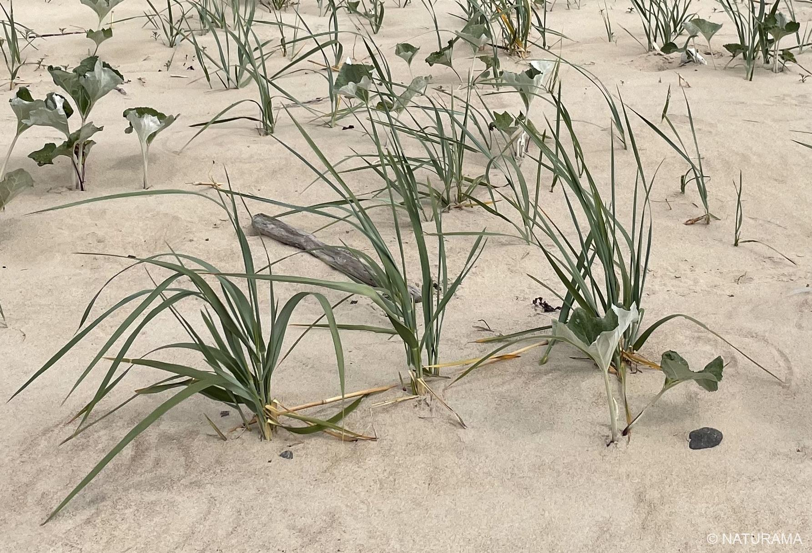
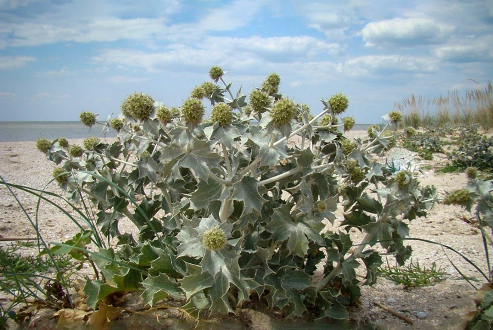
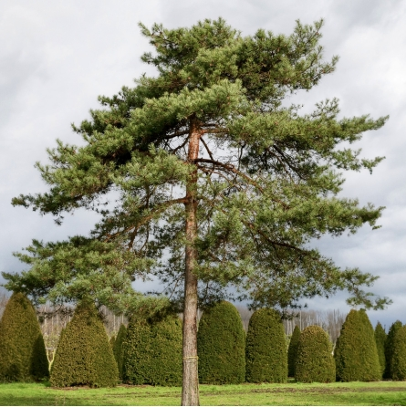
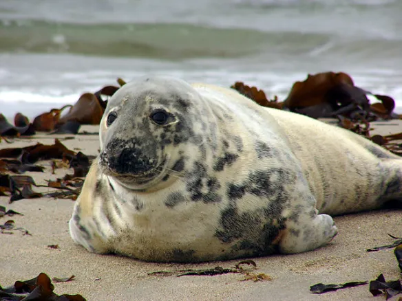
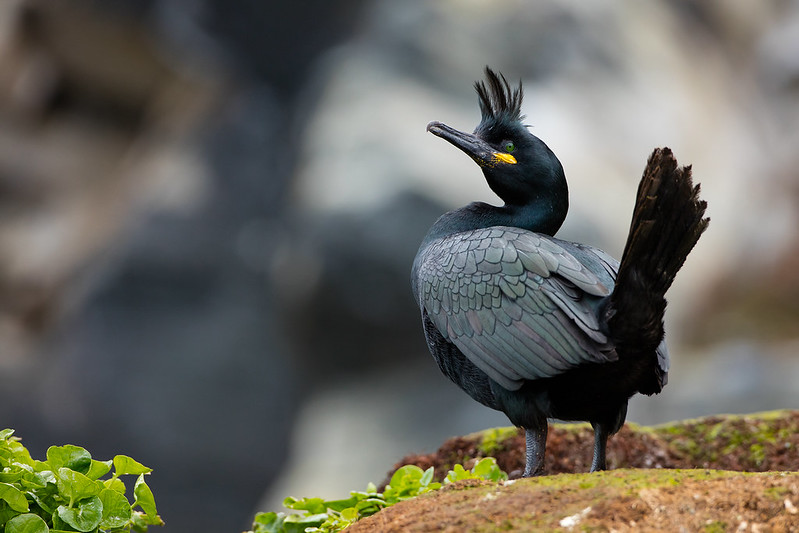
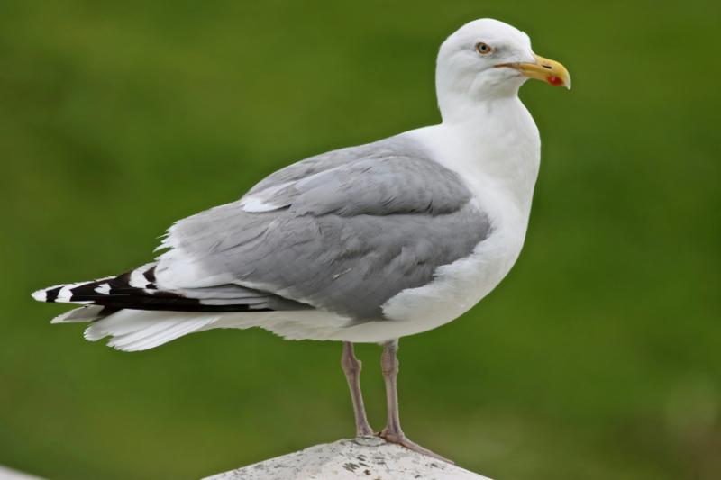

Gamta
Lietuvos pajūrio gamta
Sužinok apie Lietuvos pajūrio gamtą, augalus ir gyvūnus.
Augalai
Pajūrio augalai prisitaikę augti smėlingoje dirvoje ir atlaikyti vėją.

Jos ilgos šaknys padeda sutvirtinti kopų smėlį.

Retas pajūrio augalas, kurio negalima skinti.

Ji dažna pajūrio miškuose, kur dirvožemis smėlingas.
Gyvūnai
Pajūrio buveinėse galima sutikti įvairių paukščių, o Baltijos jūros pakrantėje – ir ruonių.

Baltijos jūros žinduolis. Pamatęs ruonį paplūdimyje, laikykis atstumo.

Puikiai nardo ir gaudo žuvis. Dažnai peri kolonijomis.

Pajūryje dažnas paukštis, ieškantis maisto pakrantėje